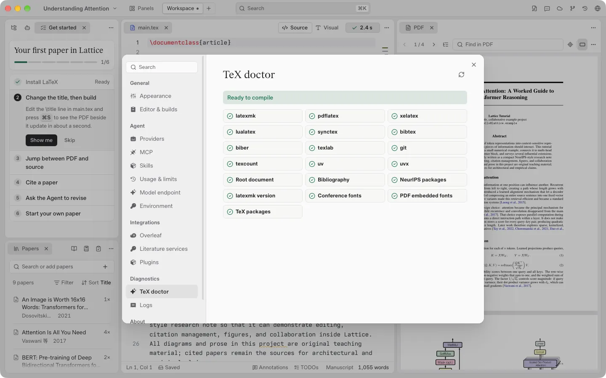
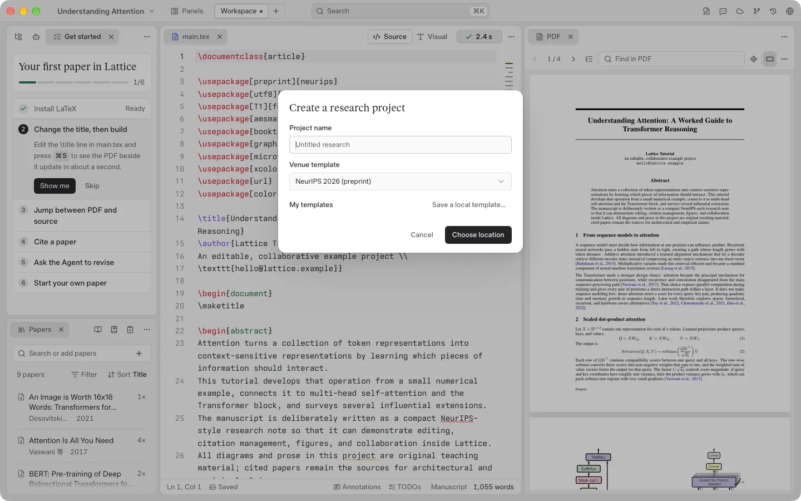
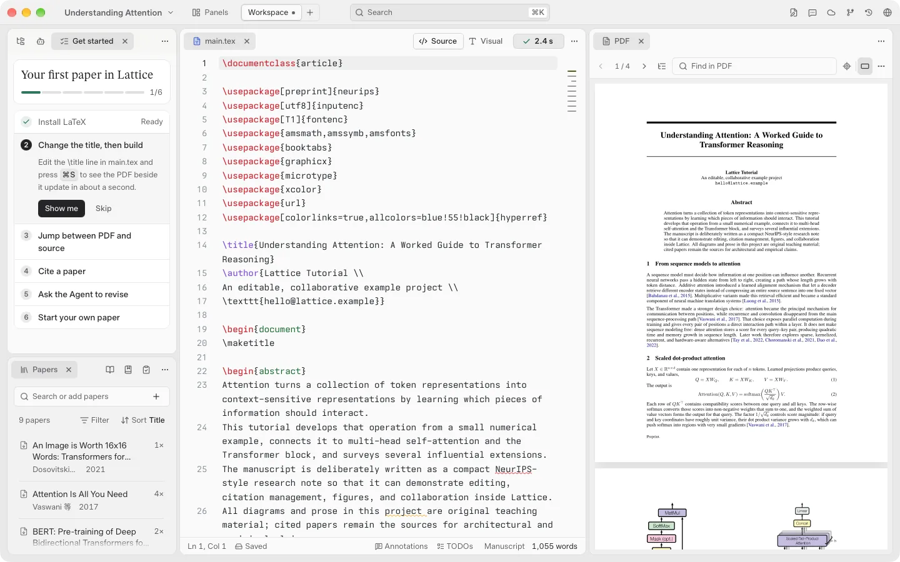

Getting started
Install Lattice
- Download the
.dmgfrom the latest release and drag Lattice into Applications. On an Intel Mac, take the file ending in_x64.dmg. With Homebrew:brew install --cask lattice. - Open Lattice. It updates itself: when a new version is ready, Lattice › Restart to Update… installs it. You can change this in Settings › Editor & builds › App updates.
Lattice needs macOS 14 or later. Linux (AppImage) and Windows builds are experimental and have no Agent.
Set up TeX
Lattice builds PDFs with your own TeX installation (MacTeX or TeX Live). If you have none, Lattice offers to install BasicTeX for you: it is the first step of the Get started checklist, and a build that finds no TeX offers it too. A missing LaTeX package found during a build can also be installed from the build problem itself.
To check your setup at any time, open Settings › TeX doctor. It lists every tool a build uses and what the open project needs (its root document, bibliography, venue packages and fonts). Ready to compile means you are set. If something is red, Install required tools installs it; adding papers and looking up citations need a small Python tool (uv), which the same button installs.

Open or create a project
The project menu (the project name at the top left of the window) and the File menu have the same actions:
- Open another folder (
⌘O): any folder with a.texfile. Lattice works on it in place. - New project (
⌘⇧N): name it, pick a venue template (NeurIPS, ICML, ICLR, ACL, CVPR, AAAI or a thesis class) or one of your own saved templates, then Choose location. - Clone repository…: a Git repository from GitHub or elsewhere.
- Open from Overleaf: see Overleaf sync.
- Import Overleaf ZIP…: a project downloaded from Overleaf as a ZIP.

Recent projects are in File › Open Recent. A window can hold several projects as tabs in the title bar.
The Get started checklist
Guided tutorial in the project menu opens a sample paper beside Get started, a six-step checklist: install LaTeX, change the title and build, jump between PDF and source, cite a paper, ask the Agent to revise a paragraph, and start your own paper. Each step has Show me, and steps you do on your own tick themselves. You can reopen the checklist from Panels › Get started.
